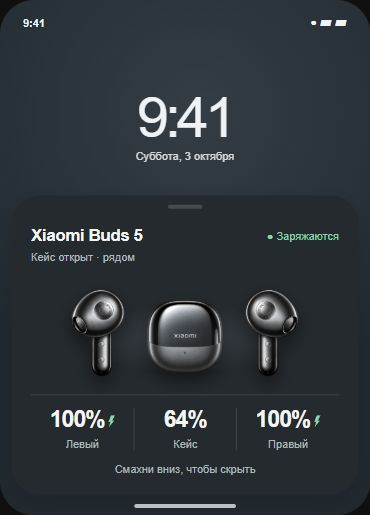

Три заряда
Левый наушник, кейс и правый наушник — в одном понятном порядке.
[ 01 / XIAOMI BUDS 5 · ANDROID ]
Компактная карточка для Xiaomi Buds 5 появляется поверх текущего экрана, когда оба наушника в открытом кейсе. Закрыл кейс или вынул наушник — она плавно уходит вниз.
Тестовая сборка из GitHub Releases. Установка и обновления подтверждаются средствами Android.
[ 02 / НА ЭКРАНЕ ]
Карточка в светлой и тёмной теме. Заряд на изображениях — для примера; на телефоне приложение получает данные твоих Buds 5.
[ 01 / ВНЕШНИЙ ВИД ]
Мягкий графит для тёмной темы. Светлая поверхность для светлой. Наушники и три значения заряда остаются в центре внимания.
«Как в системе» меняет тему вместе с телефоном. Ещё можно выбрать светлую или тёмную вручную.

[ 03 / ФУНКЦИИ ]
Левый наушник, кейс и правый наушник — в одном понятном порядке.
Карточка ждёт подтверждения обоих наушников в кейсе и не появляется снова при использовании одного.
Потяни карточку вниз: короткий жест возвращает её, длинный скрывает до нового открытия.
Светлая, тёмная или в тон системе. Выбор меняет и приложение, и карточку.
[ 04 / START HERE ]
Скачай установочный файл из Assets релиза и открой его на телефоне.
Разреши «Устройства поблизости» и показ поверх других приложений.
Выбери сопряжённые Buds 5, нажми «Запустить наблюдение» и открой кейс с двумя наушниками внутри.
[ 05 / FAQ ]
Сигнал от левого и правого наушников может прийти в разных Bluetooth-пакетах. Приложение дожидается подтверждения обоих, чтобы не показывать карточку ошибочно при использовании одного наушника.
Сейчас проверены Xiaomi Buds 5 на POCO F7 с Android 16 / HyperOS 3. Поддержка других моделей не заявлена.
Настройки и журнал хранятся на телефоне. В приложении нет интернет-разрешения или аналитики. Подробнее о данных и разрешениях ↗
Наблюдение работает через foreground-службу. HyperOS может ограничивать фоновые процессы; при необходимости настрой автозапуск и ограничения батареи для приложения.
[ BUDS CURTAIN / 0.6.6 ]